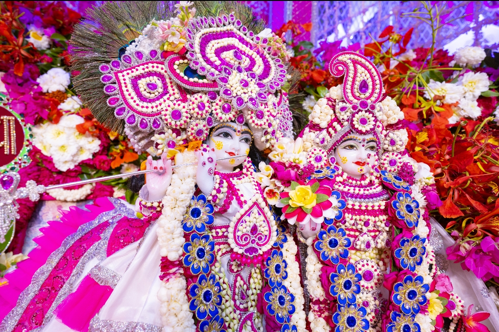

Dowload HD Photos
Blog
About Radha Keli Kunj
Share Website With Others
Feature Request / Bug Report
Privacy Policy


भगवद् प्राप्ति दुर्लभ नहीं, दुर्लभ है भगवद्
प्राप्त महापुरुषों का मिलना
(पूज्य श्री हित प्रेमानन्द गोविंद शरण जी महाराज)
श्री धाम वृंदावन में विराजमान श्रीश्यामा-श्याम के नाम,
रूप, लीला, धाम निष्ठ रसिक संत श्री हित प्रेमानन्द
गोविंद शरण जी महाराज अध्यात्म जगत् की एक
विशिष्टतम विभूति हैं। वह निरन्तर अपने सत्संग व
सद्विचारों के द्वारा परमार्थ पथ की ओर अग्रसर साधकों का
मार्गदर्शन कर रहे हैं एवं व्यवहार-प्रपंच, विषय-भोगों में
फंसे लोगों में आध्यात्मिक चेतना का संचार कर रहे हैं।
पूज्य महाराज जी भगवत् साक्षात्कार की प्रबल लालसा
लेकर 13 वर्ष की अल्पायु में ही गृहत्याग कर साधन पथ
पर चल पड़े थे तथा उन्होंने सन्यास लेकर अपना
अधिकांश जीवन ब्रह्मबोध प्राप्ति की इच्छा से उत्कट
वैराग्य पूर्वक गंगा किनारे व्यतीत किया। कालान्तर में
काशी में आयोजित श्रीयुगल सरकार श्यामा-श्याम की
रासलीला से आकर्षित होकर विश्वनाथ भगवान् की प्रेरणा
से वे काशी से वृंदावन आये और विगत कई वर्षों से धाम
निष्ठा के साथ श्रीहित हरिवंश महाप्रभु द्वारा प्रकट प्रिया
- प्रियतम की रसोपासना में निमग्न हैं।
महाराज श्री को अपना भारत देश बहुत प्रिय है और
उनका एकमात्र लक्ष्य यही है कि हमारे देशवासी अशान्ति,
दुःख, क्लेश और भय प्रदान करने वाले असत् आचरणों
(जुआ, मांस-मदिरा, हिंसा, व्यभिचार आदि) का त्याग
कर, अपने कर्तव्य कर्म का दृढ़तापूर्वक भगवद् समर्पित
करते हुए पालन करें एवं इस संसार में भी सुख-शान्तिमय
जीवन व्यतीत कर मानव जीवन के चरम लक्ष्य भवबंधन
से मुक्ति अर्थात् भगवान् की प्राप्ति करें।
महाराज जी भगवद् प्राप्ति करने के लिए सभी को समान
रूप से पात्र मानते हैं। उनका कहना है कि हम सभी
भगवान् के अंश हैं और प्रभु की प्राप्ति करने में
समानाधिकार रखते हैं अर्थात् प्रभु के प्रेम की प्राप्ति या
भगवद् प्राप्ति में किसी प्रकार का भेदभाव नहीं है।
महाराज श्री समस्त शास्त्रों, सिद्धान्तों व उपदेशों का सार
यही बताते हैं कि भगवद् आश्रित होकर निरन्तर भगवान्
के नाम का जप करते रहो, मंगलमय प्रभु के प्रत्येक
विधान में संतुष्ट रहो, गन्दे आचरणों का त्याग करो एवं
भगवद् भाव से सबकी सेवा करो।